![]()
library(tidyverse) # Data manipulation and plotting
library(tidylog) # Print a log of data manipulations done with tidyverse
library(glmmTMB) # Generalized linear (mixed) models
library(marginaleffects) # Compute marginal/condition effects
library(patchwork) # Combine multiple plots
# Set ggplot2 theme
black_theme <- theme(
axis.line = element_line(linewidth = 2, lineend = "round", color = "white"),
panel.grid = element_blank(),
panel.background = element_rect(fill = "black", color = NA),
axis.ticks = element_blank(),
axis.text = element_text(size = 21, face = "bold", color = "white"),
axis.title = element_text(size = 21, face = "bold", color = "white"),
plot.title = element_text(size = 25, face = "bold", color = "white"),
plot.background = element_rect(fill = "black", color = NA),
legend.background = element_rect(fill = "black", color = NA),
legend.text = element_text(size = 21, color = "white"),
legend.title = element_text(size = 21, face = "bold", color = "white"),
legend.position = "bottom"
)
theme_set(black_theme)
# Set global default for geom_point shape
update_geom_defaults("point", list(shape = 1, size = 3, alpha = 0.8))
# silence marginaleffects warnings about glmmTMB
options(marginaleffects_safe = FALSE)
set.seed(333)Introduction
Series: Understanding Interactions in Regression Models
This is Part 1 of a tutorial series on interactions in regression models. This part focuses on categorical × numerical interactions. Future parts will cover: - Part 2: Numerical × numerical interactions - Part 3: Interactions in generalized linear models (non-linear link functions) - Part 4: Interactions in generalized additive models
Interactions in regression models (GL(M)M or GA(M)M) can be confusing to conceptualize and interpret, especially when link functions are involved. Often, the typical model coefficients output does not answer the research question that we are interested in.
In this tutorial, we will explore how to interpret interactions between categorical and numerical variables. We’ll examine various quantities of interest using the marginaleffects package, including marginal effects, conditional effects, and how to handle Simpson’s Paradox and sampling bias.
What are interactions?
In regression models, an interaction occurs when the effect of one predictor variable on the response depends on the value of another predictor variable. Mathematically, for two predictors \(X_1\) and \(X_2\), a model with an interaction term looks like:
\[Y = \beta_0 + \beta_1 X_1 + \beta_2 X_2 + \beta_3 (X_1 \times X_2) + \epsilon\]
Here, \(\beta_3\) is the interaction coefficient. When \(\beta_3 \neq 0\), the effect of \(X_1\) on \(Y\) depends on the value of \(X_2\) (and vice versa).
For a categorical predictor (e.g., sex) and a continuous predictor (e.g., snow depth), the interaction means that the slope of the continuous predictor differs between levels of the categorical predictor. In biological terms, this could mean that males and females respond differently to environmental conditions.
Marginal vs Conditional Effects
Understanding the distinction between marginal and conditional effects is crucial for interpreting interactions:
Conditional effects (or conditional predictions) are the effects of a predictor at specific values of other predictors. For example, the effect of snow depth for males versus for females.
Marginal effects (or marginal predictions) are averaged across the distribution of other predictors. For example, the average effect of snow depth across the entire population, accounting for the fact that both males and females are present.
When we have interactions, we often care about both types of effects depending on our research question.
Setup
First, we load the relevant packages and set up our ggplot2 theme for the rest of the document.
Case Study: Categorical × Numerical Interactions
For this example, let’s travel to Ram Mountain, Alberta. We are interested in the mass of Bighorn sheep (Ovis canadensis) in spring and how it relates to winter conditions. However, males and females segregate during winter such that females typically go to lower altitudes and experience less snow than the males.
This case study demonstrates a categorical × numerical interaction: the effect of a continuous variable (snow depth) differs between categories (male vs female).
We will simulate a population of 1000 individuals with a 50:50 sex ratio from which we will subsample to try to estimate the true (latent) population trends.
Simulating the population
# total number of individuals
n_individuals_population <- 1000
# sexes
sexes <- c("male", "female")
# intercept male weight
male_intercept <- 220
# intercept female weight
female_intercept <- 180
# Constant sd
sd_weight <- 15
# Male snow effect
male_loss <- -0.8
# Female snow effect
female_loss <- -2.5
tibble(
sex = rep(sexes, n_individuals_population / length(sexes)),
snow_depth = runif(n_individuals_population,
min = ifelse(sex == "male", 35, 0), # if male, snow depth starts at 35, if female, 0
max = ifelse(sex == "male", 70, 35) # if male, snow depth ends at 70, if female, 35
),
weight = rnorm(n_individuals_population,
mean = ifelse(sex == "male", male_intercept + male_loss * snow_depth, female_intercept + female_loss * snow_depth),
sd = sd_weight
)
) -> bighorn_populationNotice that we’ve built in several key features:
- Different intercepts: Males are heavier than females on average (220 kg vs 180 kg when snow depth = 0)
- Different slopes: Females lose more weight per cm of snow depth (-2.5 kg/cm vs -0.8 kg/cm for males)
- Different snow depth distributions: Males experience more snow (35-70 cm) than females (0-35 cm) due to habitat segregation
This creates a situation where an interaction is present in the data-generating process.
Simpson’s Paradox
What is the apparent correlation between spring mass and snow depth?
ggplot(bighorn_population) +
geom_point(aes(x = snow_depth, y = weight, color = sex)) +
geom_smooth(aes(x = snow_depth, y = weight),
method = "lm",
se = FALSE,
color = "red",
linewidth = 2)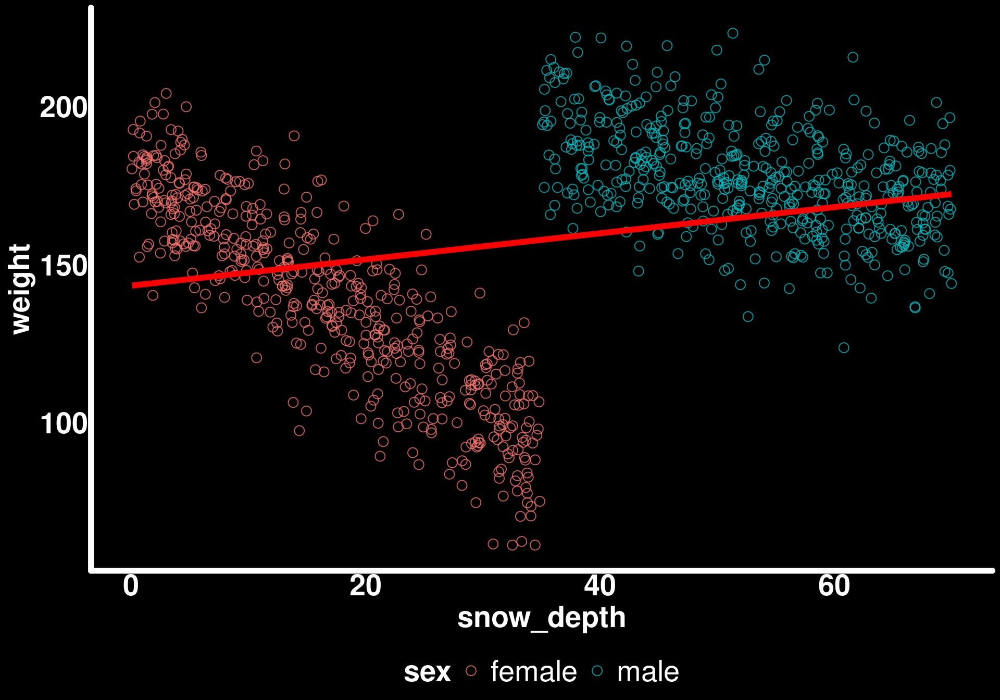
This is what is called Simpson’s Paradox. When we ignore the grouping variable (sex), we see a positive correlation between snow depth and weight! How can this be when we know that both males and females lose weight with increasing snow depth?
Understanding Simpson’s Paradox
Simpson’s Paradox occurs when a trend that appears in different groups disappears or reverses when the groups are combined. In our case:
- Within each sex: More snow → lower weight (negative relationship)
- Between sexes: Males experience more snow AND are heavier (confounded)
- Overall pattern: Appears to show more snow → higher weight (positive relationship)
This happens because sex is a confounding variable that is associated with both snow depth (males experience more snow) and weight (males are heavier). When we pool the data, we’re essentially comparing the high-snow males (heavy) to the low-snow females (lighter), which creates an artifactual positive correlation.
This is why we need to account for group structure in our models!
When we look at the effect of snow depth on the spring mass by sex, we get different conclusions.
ggplot(bighorn_population) +
geom_point(aes(x = snow_depth, y = weight, color = sex)) +
geom_smooth(aes(x = snow_depth, y = weight), method = "lm", se = FALSE, color = "red", linewidth = 2) +
geom_smooth(aes(x = snow_depth, y = weight, color = sex), method = "lm", se = FALSE)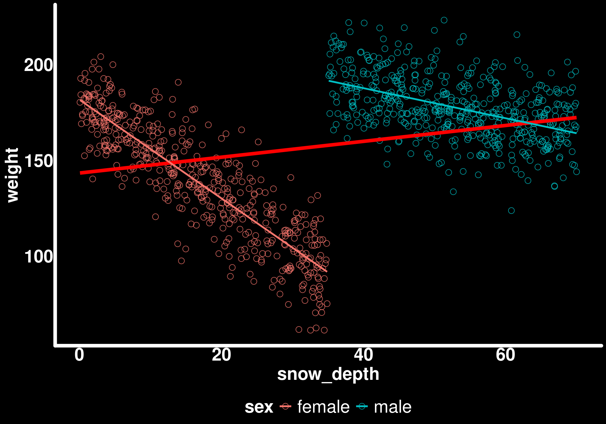
Now we can see the true negative relationships within each sex.
Let’s fit a model to the full population to establish our “ground truth”:
mod_mass_true <- glmmTMB(weight ~ sex * snow_depth, data = bighorn_population, family = gaussian())We will use this model to compare with two different sampling scenarios later on.
Sampling from the population
In reality, we can’t measure every individual in a population. We have to work with samples. Let’s explore how different sampling scenarios affect our ability to answer key research questions.
We have multiple questions:
- Do males and females differ in their mass in spring?
- Does snow depth affect spring mass equally between sexes?
- What is the effect of snow depth for the population, on average?
Scenario 1: Balanced sampling
We set up our sheep trapping apparatus and start weighing sheep. We will sample 100 individuals. Luckily, our trap attracts both sexes approximately equally.
# number of individuals weighed
n_individuals <- 100
# Subsample 100 individuals with even sex ratio (50 males, 50 females)
bighorn_mass_1 <- bighorn_population |>
group_by(sex) |>
slice_sample(n = n_individuals / 2, replace = FALSE) |>
ungroup()group_by: one grouping variable (sex)
slice_sample (grouped): removed 900 rows (90%), 100 rows remaining (removed 0 groups, 2 groups remaining)
ungroup: no grouping variables remainLet’s look at the raw data of the subsample
What is the apparent correlation between spring mass and snow depth?
ggplot(bighorn_mass_1) +
geom_point(aes(x = snow_depth, y = weight, color = sex)) +
geom_smooth(aes(x = snow_depth, y = weight),
method = "lm",
se = FALSE,
color = "red")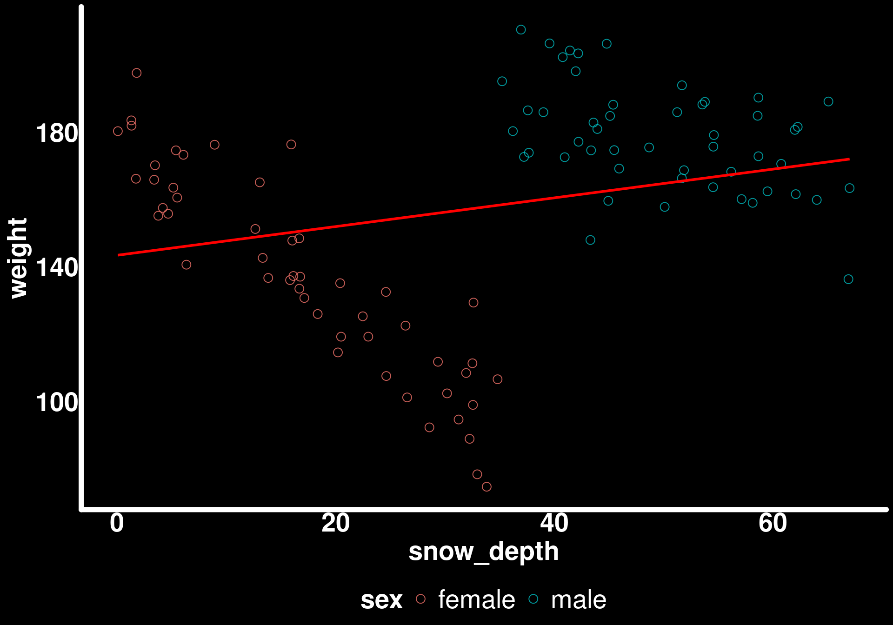
Simpson’s Paradox is still present in our sample!
When we look at the effect of snow depth on the spring mass by sex, we get different conclusions.
ggplot(bighorn_mass_1) +
geom_point(aes(x = snow_depth, y = weight, color = sex)) +
geom_smooth(aes(x = snow_depth, y = weight), method = "lm", se = FALSE, color = "red") +
geom_smooth(aes(x = snow_depth, y = weight, color = sex), method = "lm", se = FALSE)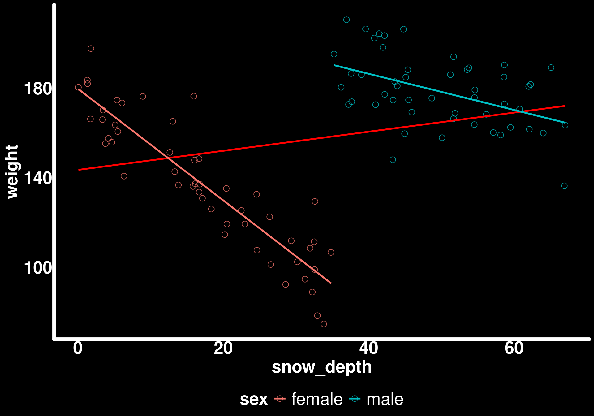
In these conditions, it is invalid to simply regress weight ~ snow_depth while ignoring the sexes to get the effect for the population. Let’s fit a model to these data and see how we can extract different quantities and predictions using marginaleffects.
Fitting the model
mod_mass_1 <- glmmTMB(weight ~ sex * snow_depth, data = bighorn_mass_1, family = gaussian())
summary(mod_mass_1) Family: gaussian ( identity )
Formula: weight ~ sex * snow_depth
Data: bighorn_mass_1
AIC BIC logLik -2*log(L) df.resid
810.8 823.9 -400.4 800.8 95
Dispersion estimate for gaussian family (sigma^2): 176
Conditional model:
Estimate Std. Error z value Pr(>|z|)
(Intercept) 179.7115 3.4913 51.47 < 2e-16 ***
sexmale 39.0114 11.0093 3.54 0.000395 ***
snow_depth -2.4955 0.1718 -14.53 < 2e-16 ***
sexmale:snow_depth 1.6868 0.2686 6.28 3.37e-10 ***
---
Signif. codes: 0 '***' 0.001 '**' 0.01 '*' 0.05 '.' 0.1 ' ' 1Understanding the model output
The model output gives us:
- Intercept: The intercept for female weight (when snow_depth = 0). This is \(\beta_0\) in our model equation.
- sexmale: The difference between male and female intercepts. This is \(\beta_1\).
- snow_depth: The slope of snow_depth for females. This is \(\beta_2\).
- sexmale:snow_depth: The difference between the male and female slopes. This is \(\beta_3\) (the interaction term).
To get the male slope, we need to add: snow_depth + sexmale:snow_depth. Similarly, to get the male intercept, we add: Intercept + sexmale.
This parameterization is useful for hypothesis testing (is the difference significant?) but not directly interpretable for our research questions. This is where marginaleffects becomes invaluable.
Question 1: Do males and females differ in their mass in spring?
To answer this, we need the average weight for each sex across all observed snow depths. This is a marginal prediction.
predictions(mod_mass_1, by = "sex")
sex Estimate Std. Error z Pr(>|z|) S 2.5 % 97.5 %
female 137 1.88 73.0 <0.001 Inf 133 141
male 178 1.88 95.1 <0.001 Inf 175 182
Type: responseHow do these predictions compare to the raw data?
bighorn_mass_1 |>
group_by(sex) |>
summarise(avg = mean(weight))group_by: one grouping variable (sex)
summarise: now 2 rows and 2 columns, ungrouped# A tibble: 2 × 2
sex avg
<chr> <dbl>
1 female 137.
2 male 178.Exactly the same! The predictions() function with by = "sex" gives us the model-predicted mean for each sex, marginalized over the distribution of snow depth in our sample.
We can now compare the two weights by passing the predictions through the hypotheses() function and stating the null hypothesis that the difference between females (b1, for the first row of the predictions() output) and males (b2) is zero.
predictions(mod_mass_1, by = "sex") |>
hypotheses(hypothesis = "b1 - b2 = 0")
Hypothesis Estimate Std. Error z Pr(>|z|) S 2.5 % 97.5 %
b1-b2=0 -41.5 2.65 -15.7 <0.001 181.2 -46.7 -36.3This is the same difference as what can be calculated from the raw data. But it is not the same as what is given by the model output which compares the intercepts for the sexes and not the average.
Question 2: Does snow depth affect spring mass equally between sexes?
The output of the model already answered that but let’s calculate and plot the slope of snow depth for both sexes using the slopes() function.
Understanding slopes()
The slopes() function computes the instantaneous rate of change of the response with respect to a predictor. For a linear model, this is just the slope coefficient. But when interactions are present, the slope depends on other variables.
slopes(mod_mass_1, variables = "snow_depth", by = "sex", vcov = TRUE) |>
ggplot(aes(x = estimate, xmax = conf.high, xmin = conf.low, y = sex, color = sex)) +
geom_pointrange(size = 1.5,
lineend = "round",
linewidth = 2,
pch = 21,
stroke = 4) +
geom_vline(xintercept = female_loss, color = "red") +
geom_vline(xintercept = male_loss, color = "blue") +
theme(legend.position = "none")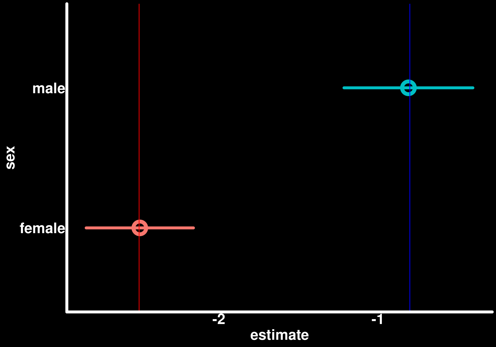
From this sample, we can accurately quantify how snow depth affects weight to a different extent for males and females. The vertical lines show the true population values, and our 95% confidence intervals cover them.
Testing for a difference in slopes
We can formally test whether the slopes differ:
slopes(mod_mass_1, variables = "snow_depth", by = "sex", vcov = TRUE) |>
hypotheses(hypothesis = "b1 - b2 = 0")
Hypothesis Estimate Std. Error z Pr(>|z|) S 2.5 % 97.5 %
b1-b2=0 -1.69 0.269 -6.28 <0.001 31.5 -2.21 -1.16This tests whether the female slope minus the male slope equals zero. This is mathematically equivalent to testing whether the interaction term sexmale:snow_depth is different from zero.
Alternatively, we could test using a ratio:
slopes(mod_mass_1, variables = "snow_depth", by = "sex", vcov = TRUE) |>
hypotheses(hypothesis = "b1/b2 = 1")
Hypothesis Estimate Std. Error z Pr(>|z|) S 2.5 % 97.5 %
b1/b2=1 2.09 0.816 2.56 0.0106 6.6 0.487 3.68Here, the estimate is the difference between the null hypothesis (1) and the calculated ratio. So, 1 + estimate gives us the ratio of slopes. A ratio of 1 means the slopes are equal, while a ratio of 2 means the first slope is twice as large as the second.
Note: Testing on the ratio scale can be more interpretable for some questions (e.g., “is the female effect twice as strong as the male effect?”) but may have different statistical properties than testing on the difference scale.
Question 3: What is the effect of snow depth for the population, on average?
We saw from plotting the raw data that we can’t fit a model ignoring sex to calculate the effect of snow depth for the population as a whole (due to Simpson’s Paradox). We can, however, use marginaleffects to calculate the average effect of snow depth.
Understanding avg_slopes()
The avg_slopes() function computes the average marginal effect. It calculates the slope for each observation (accounting for interactions with other predictors), then averages those slopes. This gives us the population-average effect.
avg_slopes(mod_mass_1, variables = "snow_depth", vcov = TRUE)
Estimate Std. Error z Pr(>|z|) S 2.5 % 97.5 %
-1.65 0.134 -12.3 <0.001 113.1 -1.92 -1.39
Term: snow_depth
Type: response
Comparison: dY/dXHow does this compare to the average simulated slope?
mean(c(male_loss, female_loss))[1] -1.65Exactly the same
Visualizing marginal vs conditional predictions
Let’s plot these average predictions along with the sex-specific regression lines to see the difference between marginal and conditional effects.
avg_pred_mass_1 <- avg_predictions(mod_mass_1, variables = "snow_depth")
pred_sex_mass_1 <- predictions(mod_mass_1, newdata = bighorn_mass_1)
ggplot() +
geom_ribbon(data = avg_pred_mass_1,
aes(x = snow_depth, ymin = conf.low, ymax = conf.high),
color = "lightgreen",
fill = "lightgreen",
alpha = 0.4) +
geom_line(data = avg_pred_mass_1,
aes(x = snow_depth, y = estimate),
color = "lightgreen",
lineend = "round",
linewidth = 2) +
geom_ribbon(data = pred_sex_mass_1,
aes(x = snow_depth, ymin = conf.low, ymax = conf.high, color = sex, fill = sex),
alpha = 0.8) +
geom_line(data = pred_sex_mass_1,
aes(x = snow_depth, y = estimate, color = sex),
lineend = "round",
linewidth = 2) +
geom_point(data = bighorn_mass_1,
aes(y = weight, x = snow_depth, color = sex)) +
guides(alpha = "none", fill = "none") +
labs(title = "Sample predictions") +
coord_cartesian(ylim = c(50, 220)) -> p1
p1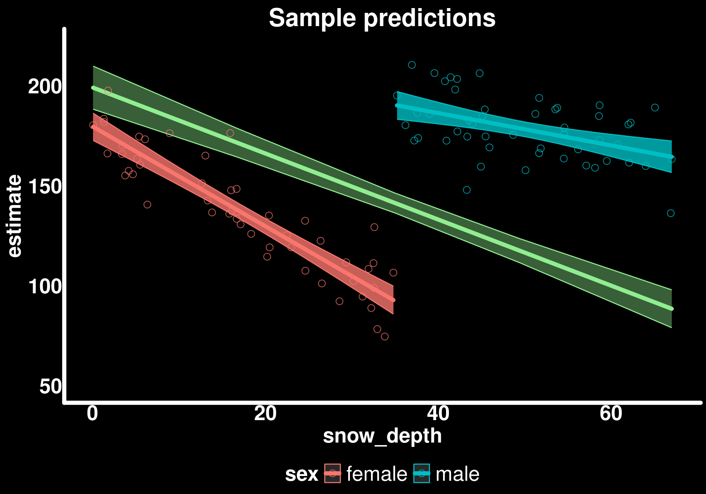
The green line shows the marginal prediction - what we expect for a randomly selected individual from the population at a given snow depth. The blue and red lines show the conditional predictions - what we expect for males or females specifically.
Comparing to the true population
How do our predictions differ from the true latent trends?
avg_pred_mass_true <- avg_predictions(mod_mass_true, variables = "snow_depth")
pred_sex_mass_true <- predictions(mod_mass_true, newdata = bighorn_population)
ggplot() +
geom_ribbon(data = avg_pred_mass_true, aes(x = snow_depth, ymin = conf.low, ymax = conf.high), color = "lightgreen", fill = "lightgreen", alpha = 0.4) +
geom_line(data = avg_pred_mass_true, aes(x = snow_depth, y = estimate), color = "lightgreen", lineend = "round", linewidth = 2) +
geom_ribbon(data = pred_sex_mass_true, aes(x = snow_depth, ymin = conf.low, ymax = conf.high, color = sex, fill = sex), alpha = 0.8) +
geom_line(data = pred_sex_mass_true, aes(x = snow_depth, y = estimate, color = sex), lineend = "round", linewidth = 2) +
geom_point(data = bighorn_population, aes(y = weight, x = snow_depth, color = sex)) +
guides(alpha = "none", fill = "none") +
labs(title = "True population") +
coord_cartesian(ylim = c(50, 220)) -> p2
p2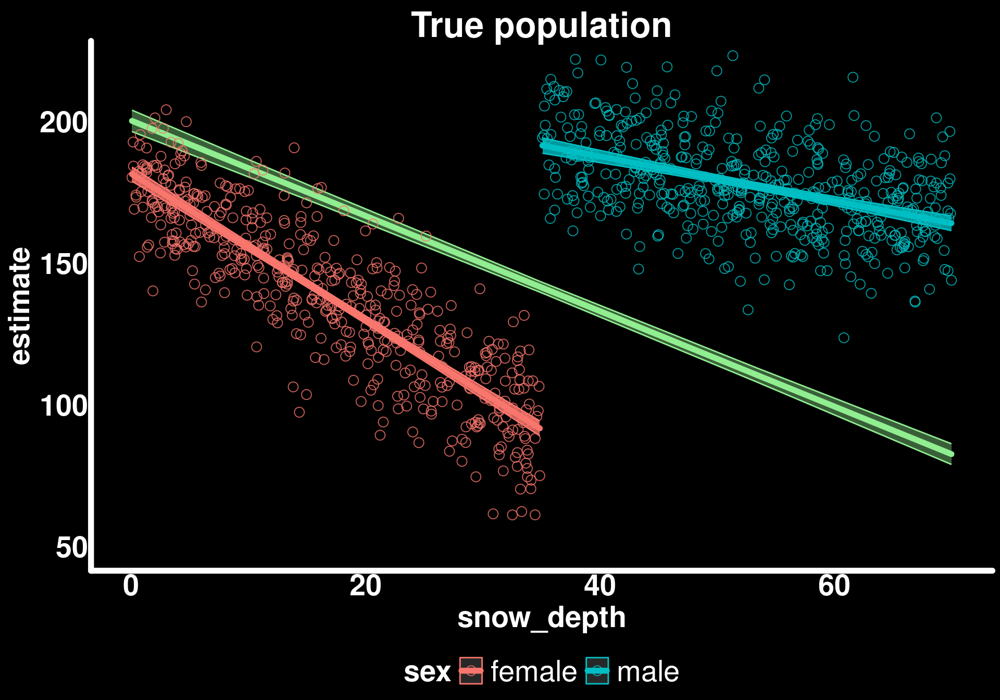
p1 + p2 + plot_layout(guides = "collect") & theme(legend.position = "bottom")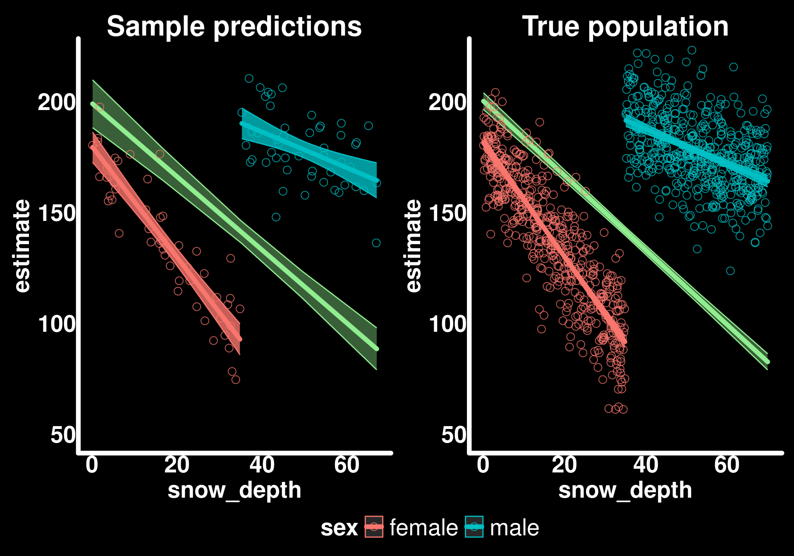
Basically the same but with less “certainty” (wider confidence intervals) in our sample estimates. This is exactly what we expect - our sample gives us unbiased estimates of the population parameters, but with more uncertainty due to smaller sample size.
Scenario 2: Biased sampling
What if our sampling method attracted more males than females such that the sex ratio was biased towards males (80% males, 20% females)?
This is a common situation in ecology - traps, detection methods, or observer bias can lead to unbalanced samples that don’t reflect the true population composition.
# Subsample 100 individuals with uneven sex ratio (80 males, 20 females)
bighorn_mass_2 <- bind_rows(
bighorn_population |> filter(sex == "male") |> slice_sample(n = 80),
bighorn_population |> filter(sex == "female") |> slice_sample(n = 20)
)filter: removed 500 rows (50%), 500 rows remaining
slice_sample: removed 420 rows (84%), 80 rows remaining
filter: removed 500 rows (50%), 500 rows remaining
slice_sample: removed 480 rows (96%), 20 rows remainingmod_mass_2 <- glmmTMB(weight ~ sex * snow_depth, data = bighorn_mass_2, family = gaussian())
avg_slopes(mod_mass_2, variables = "snow_depth", vcov = TRUE)
Estimate Std. Error z Pr(>|z|) S 2.5 % 97.5 %
-1.12 0.17 -6.62 <0.001 34.7 -1.46 -0.792
Term: snow_depth
Type: response
Comparison: dY/dXavg_pred_mass_2 <- avg_predictions(mod_mass_2, variables = "snow_depth")
pred_sex_mass_2 <- predictions(mod_mass_2, newdata = bighorn_mass_2)
ggplot() +
geom_ribbon(data = avg_pred_mass_2,
aes(x = snow_depth, ymin = conf.low, ymax = conf.high),
color = "lightgreen",
fill = "lightgreen",
alpha = 0.4) +
geom_line(data = avg_pred_mass_2,
aes(x = snow_depth, y = estimate),
color = "lightgreen",
lineend = "round",
linewidth = 2) +
geom_ribbon(data = pred_sex_mass_2,
aes(x = snow_depth, ymin = conf.low, ymax = conf.high, color = sex, fill = sex),
alpha = 0.8) +
geom_line(data = pred_sex_mass_2,
aes(x = snow_depth, y = estimate, color = sex),
lineend = "round",
linewidth = 2) +
geom_point(data = bighorn_mass_2,
aes(y = weight, x = snow_depth, color = sex)) +
guides(alpha = "none", fill = "none") +
labs(title = "Biased sample (80% males)") +
coord_cartesian(ylim = c(50, 220)) -> p3
p3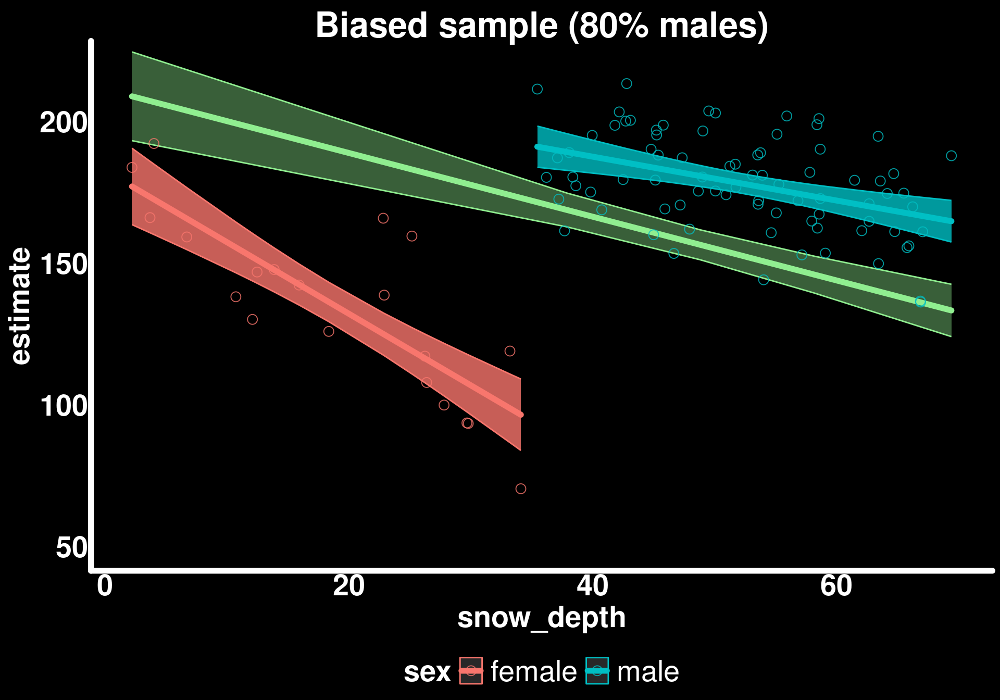
p3 + p2 + plot_layout(guides = "collect") & theme(legend.position = "bottom")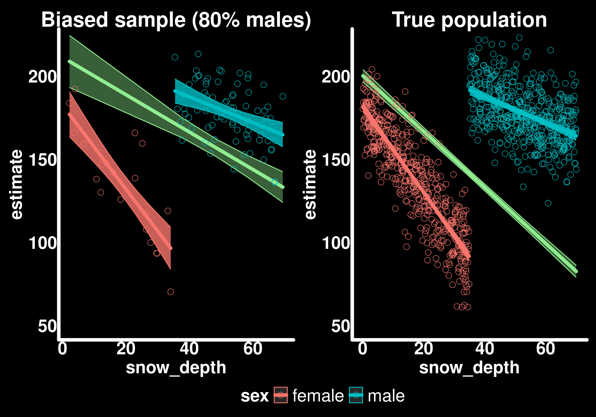
The trends for sexes are similar to the true trends but the populational trend is biased.
Understanding the bias
When we compute marginal effects using avg_slopes() or avg_predictions() without specifying new data, the function uses our sample to compute the average. If our sample is biased (80% males instead of the true 50%), then our marginal estimates will be biased toward the characteristics of the overrepresented group.
In this case, since males have a weaker snow depth effect (-0.8 kg/cm) than females (-2.5 kg/cm), oversampling males causes our marginal slope to be less steep than the true population average.
Correcting for sampling bias
From our observations in the field, we know that the populational sex ratio is 50:50 so we need to generate average predictions of snow_depth for an equal number of both sexes.
We can use the newdata argument to specify the population distribution we want to make inferences about, even if our sample doesn’t match that distribution.
Creating balanced prediction data
newdata_mass_balanced <- bighorn_mass_2 |>
group_by(sex) |>
reframe(snow_depth = seq(from = min(snow_depth), to = max(snow_depth), length.out = 50)) |>
ungroup()group_by: one grouping variable (sex)
ungroup: no grouping variables remainavg_pred_mass_3 <- avg_predictions(mod_mass_2,
variables = "snow_depth",
newdata = newdata_mass_balanced
)
bind_rows(
avg_pred_mass_2 |> mutate(type = "biased"),
avg_pred_mass_3 |> mutate(type = "corrected"),
avg_pred_mass_true |> mutate(type = "true")
) |>
ggplot() +
geom_line(aes(x = snow_depth, y = estimate, color = type), linewidth = 2) +
labs(title = "Comparing marginal predictions",
subtitle = "Biased sample corrected using balanced newdata",
y = "Predicted weight (kg)",
x = "Snow depth (cm)",
color = "Prediction type")mutate: new variable 'type' (character) with one unique value and 0% NA
mutate: new variable 'type' (character) with one unique value and 0% NA
mutate: new variable 'type' (character) with one unique value and 0% NA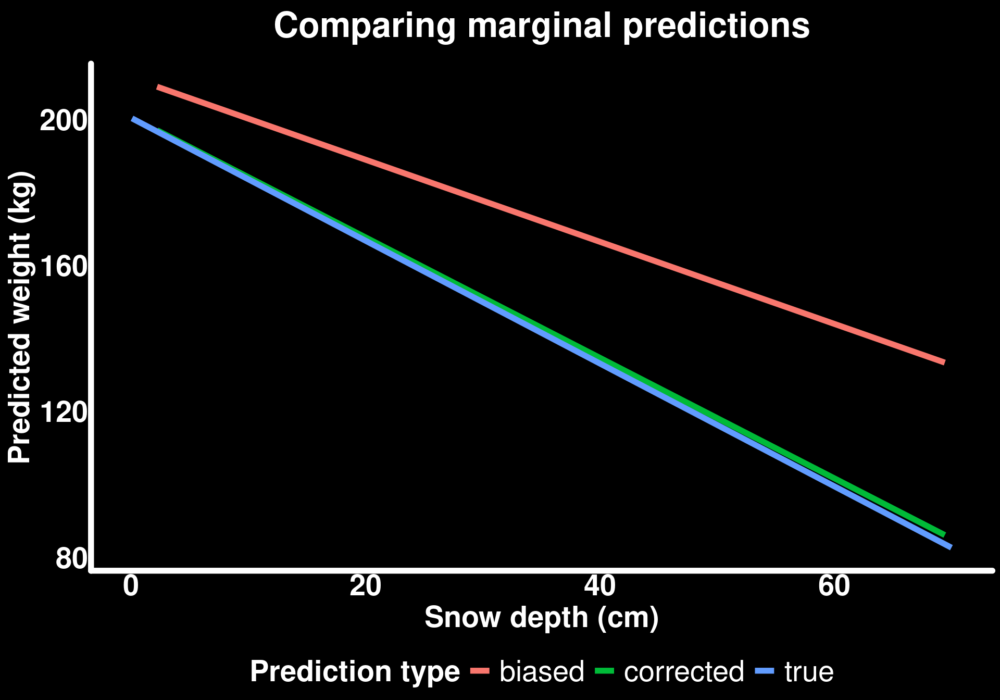
By creating a balanced newdata grid (50 males, 50 females, each across their observed snow depth range), we can compute marginal effects that reflect the true population composition rather than our biased sample composition.
Key principle: The model coefficients (intercepts, slopes, interactions) are estimated from our sample and capture the true conditional relationships. But when we compute marginal effects, we’re free to average over whatever population distribution we care about by specifying newdata.
This is particularly powerful when:
- You have biased samples but know the true population composition
- You want to make predictions for future scenarios (e.g., “what if the sex ratio changes?”)
- You want to standardize comparisons across studies with different sampling designs
Summary and Key Takeaways
What we learned
Interactions mean conditional effects: When an interaction is present, the effect of one variable depends on another variable. We need to account for this in our interpretations.
Simpson’s Paradox is real: Pooling across groups can reverse the direction of relationships. Always consider potential confounders and group structure.
Marginal vs conditional effects:
- Conditional effects: The effect for specific groups or covariate values
- Marginal effects: The average effect across the population
- Both are often scientifically interesting but answer different questions
Model coefficients ≠ quantities of interest: The model output gives you parameter estimates, but these often don’t directly answer your research questions. Use
marginaleffectsto compute interpretable quantities.Sampling bias affects marginal effects: If your sample doesn’t represent the population, your marginal estimates will be biased. But you can correct for this if you know the true population composition.
Tools for interpretation
predictions(): Get predicted values for specific covariate combinations or averaged by groupsslopes(): Get the instantaneous rate of change (slope) for each group or covariate combinationavg_predictions(): Get marginal predictions averaged over the distribution of other covariatesavg_slopes(): Get marginal slopes averaged over the distribution of other covariateshypotheses(): Test specific hypotheses about differences or ratiosnewdataargument: Specify the population you want to make inferences about
When to use each approach
- Want to know the effect for a specific group? Use
slopes()orpredictions()withby = "group" - Want to know the population-average effect? Use
avg_slopes()oravg_predictions() - Have biased sampling but know population composition? Use
newdatato specify the balanced population - Want to compare groups? Use
hypotheses()orcomparisons()to test differences - Want to visualize predictions? Use
predictions()to generate data for plotting